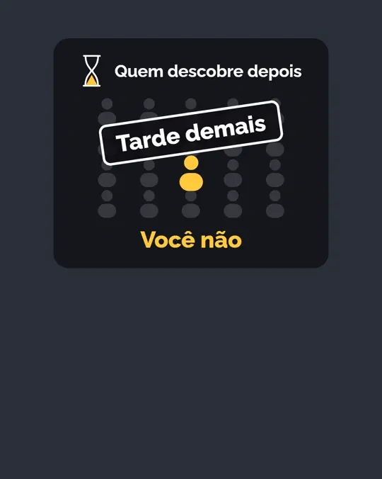
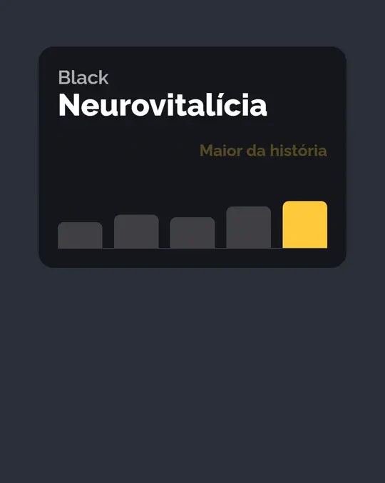
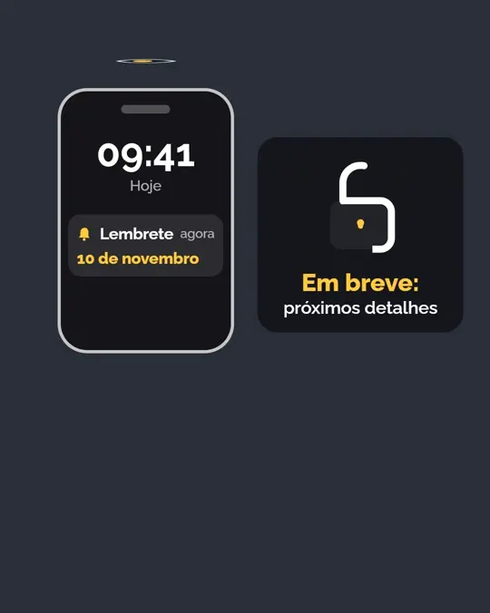
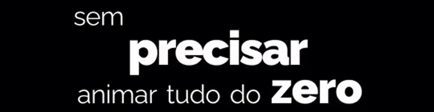
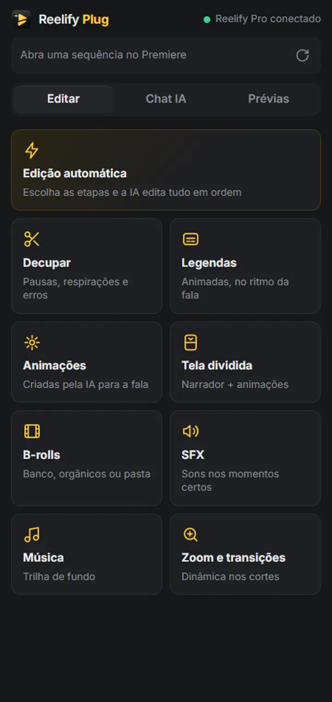
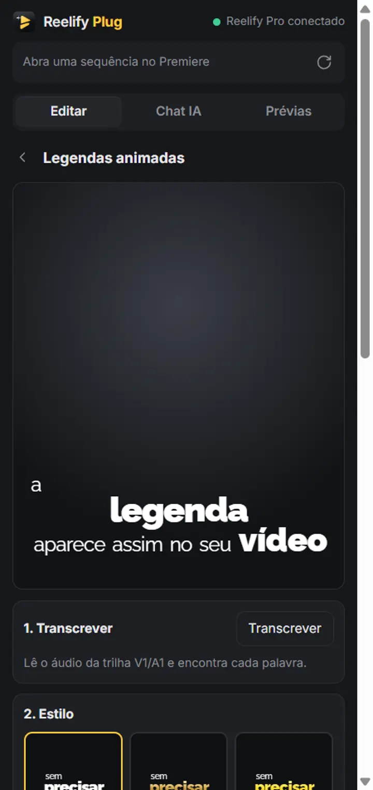
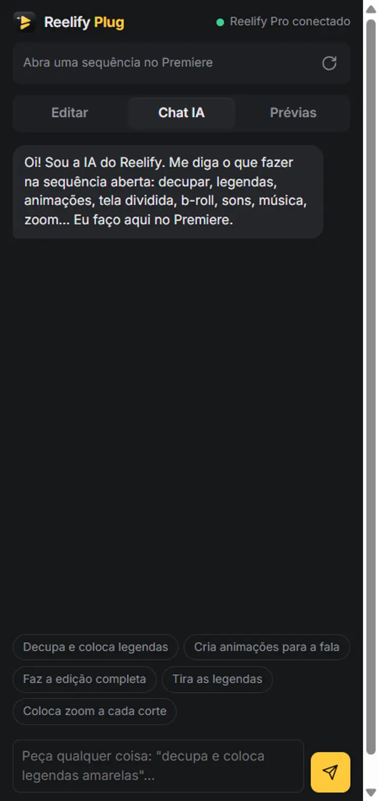

Seu vídeo editado pela IA em minutos.
O Reelify Pro decupa, legenda, anima e coloca b-roll, sons e música no seu vídeo. Tudo sincronizado com o que você fala. No app para Windows e Mac ou direto no Adobe Premiere Pro.
Tudo o que leva horas, num clique.
Aperte um botão ou só peça no chat: “decupa, coloca legendas amarelas e anima as partes importantes”.
Tira as pausas e os erros. Sem cortar palavras no meio.
A IA ouve a gravação, marca as tentativas erradas e mantém só a melhor. Os cortes seguem o fim real de cada palavra.
- Remove silêncios, respirações, gaguejadas e frases abandonadas
- Mantém a última tentativa quando você repete uma frase
- Vídeo e áudio sempre em sincronia, no app e no Premiere
Nada de modelo pronto: a IA cria a animação de cada ideia.
Números viram contadores, listas entram item a item, conceitos ganham ícones desenhados. Tudo sincronizado com a palavra exata em que você fala.
- Animações novas para cada vídeo, feitas com Remotion
- Não gostou de uma? Peça: “mais devagar”, “troca por um gráfico”
- Modo tela dividida: você numa metade, as animações na outra



Legendas que acompanham a fala e prendem a atenção.
A palavra-chave fica em destaque e cada legenda entra de um jeito. Todas ficam tempo suficiente na tela para dar leitura.
- Estilos prontos com prévia ao vivo antes de aplicar
- Tamanho, posição, cores e palavras por legenda
- A legenda some sozinha quando entra uma animação

B-roll automático
De uma pasta sua, de links (orgânicos do TikTok, YouTube, Instagram) ou do banco de vídeos. A IA escolhe o momento e o material.
Sons e música
Efeitos sonoros nos momentos certos e trilha de fundo que abaixa sozinha quando você fala.
Zoom e transições
Dinâmica nos cortes: zoom de impacto, aproximação suave e transições com whoosh.
Chat com a IA
Converse e peça mudanças em português. A IA usa as ferramentas por você.
Edição automática
Marque as etapas e a IA faz tudo em ordem: decupa, anima, legenda, coloca sons e zoom.
Gasto sob controle
Veja quanto a IA usou hoje e defina limites diários de gasto e de pedidos para cada IA conectada.
Tudo isso dentro do Adobe Premiere Pro.
O plugin vem junto com o app. Abra a sua sequência e use os mesmos botões, o chat e as prévias, direto na sua timeline.
- Premiere Pro 2022 ou mais novo
- Cada coisa em trilhas próprias, fácil de ajustar ou remover
- Prévia das animações com “refazer” e troca automática na sequência



Como funciona
Da gravação ao vídeo pronto em três passos.
Instale
Baixe o Reelify Pro. O instalador já coloca o plugin do Premiere e tudo o que ele precisa.
Conecte a sua IA
Entre com a sua conta do Claude, ChatGPT ou Gemini (ou use uma chave de API).
Edite com um clique
Abra o vídeo no app ou no Premiere, aperte Edição automática ou peça no chat.
Baixe o Reelify Pro
Escolha o seu sistema. O plugin do Premiere vem junto.
Windows
Windows 10 ou 11 (64 bits). Instalador com assistente: o plugin do Premiere e o reconhecimento de fala entram juntos.
Baixar para WindowsMac com Apple Silicon
M1, M2, M3, M4 ou mais novo. Arraste para Aplicativos; o plugin do Premiere é instalado na primeira abertura.
Baixar para Mac (M1+)Mac com Intel
Para Macs com processador Intel. Mesma instalação: arraste para Aplicativos e abra.
Baixar para Mac (Intel)Já tem o app e só quer o plugin do Premiere? Baixe o Reelify Plug avulso (vem com instalador de 1 clique para Windows e Mac).
No Mac, na primeira vez: se aparecer “não é possível verificar o desenvolvedor”, clique com o botão direito no Reelify Pro em Aplicativos › Abrir › Abrir.
Perguntas frequentes
Preciso pagar uma IA à parte?
O Reelify usa a IA que você já tem: entre com a sua conta do Claude, ChatGPT ou Gemini, ou use uma chave de API. No app você vê quanto a IA usou no dia e pode definir limites diários de gasto e de pedidos.
Funciona no Mac?
Sim: há versões para Mac com Apple Silicon (M1 ou mais novo) e para Mac com Intel.
Quais versões do Premiere são compatíveis?
Adobe Premiere Pro 2022 ou mais novo. Depois de instalar, abra em Janela › Extensões › Reelify Plug.
Preciso saber editar?
Não. Aperte Edição automática ou peça no chat o que quer. Quem já edita ganha tempo e ajusta tudo na timeline, já que cada coisa fica numa trilha própria.
Meus vídeos são enviados para algum lugar?
Não. O vídeo é processado no seu computador. Para a IA vai só o que ela precisa para decidir: o texto da fala e, no caso do b-roll, miniaturas dos materiais.
O app baixa algo depois de instalado?
No Windows, o instalador já baixa o reconhecimento de fala (cerca de 1,5 GB, uma vez só). No Mac, isso acontece na primeira abertura.
Pare de perder horas editando.
Instale o Reelify Pro e deixe a IA fazer a parte chata.
Baixar o Reelify Pro